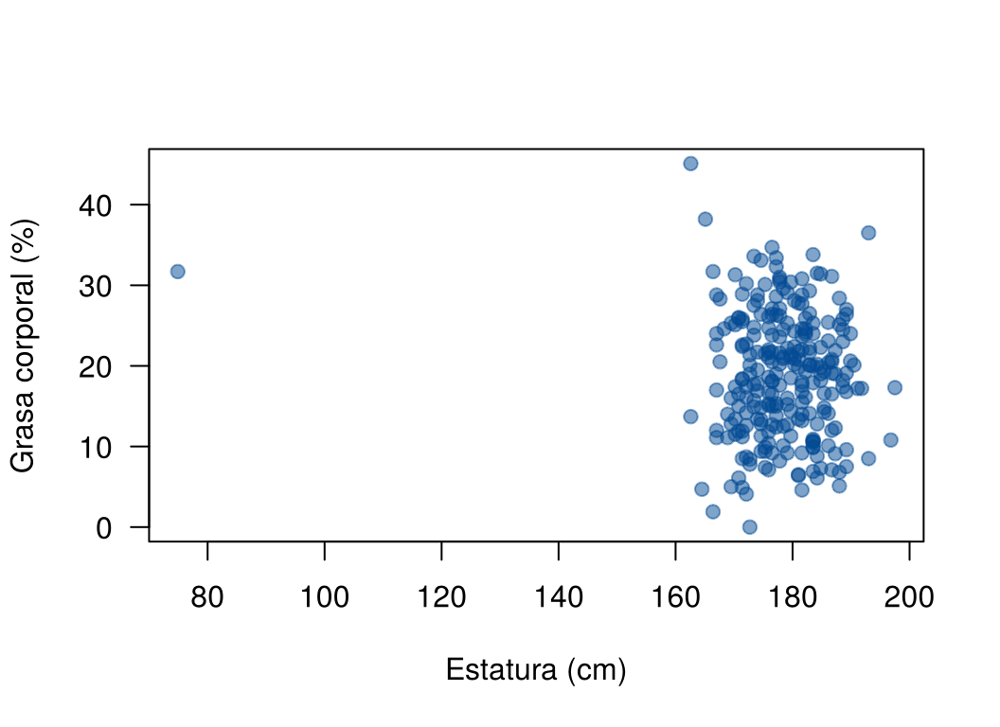

La recta estimada dice que, en promedio, la grasa aumenta 0.585 puntos por cada centímetro de abdomen. Pero es una estimación con una muestra de 252 hombres. ¿Hay evidencia de que la pendiente de la población no es cero? ¿Entre qué valores está? ¿Qué parte de la variación de la grasa explica el abdomen?
Esta página responde esas preguntas con las herramientas de la Unidad 2 aplicadas al modelo: pruebas \(t\), intervalos de confianza, la tabla de análisis de varianza y el coeficiente de determinación \(R^2\). Todo supone que se cumplen los supuestos del modelo, que se revisan en la página Revisión de los supuestos. Los bloques de código se ejecutan en orden.
Los datos se descargan aquí:
grasa.csv. Guarde el archivo en la
carpeta data de su proyecto de
RStudio.
grasa <- read.csv("data/grasa.csv")
modelo <- lm(grasa ~ abdomen, data = grasa)
n <- nrow(grasa)Si \(\beta_1 = 0\), la media de la grasa es la misma para cualquier abdomen: no hay relación lineal. Las hipótesis son
\[ H_0: \beta_1 = 0 \qquad \text{frente a} \qquad H_1: \beta_1 \neq 0 \]
y el estadístico es
\[ t = \frac{\hat{\beta}_1 - 0}{\text{EE}(\hat{\beta}_1)}, \]
que sigue una distribución \(t\) con
\(n - 2\) grados de libertad si \(H_0\) es cierta (página Propiedades de los estimadores).
summary() hace esta prueba para cada coeficiente:
round(summary(modelo)$coefficients, 4) Estimate Std. Error t value Pr(>|t|)
(Intercept) -35.1966 2.4623 -14.2942 0
abdomen 0.5849 0.0264 22.1337 0Para la pendiente, \(t = 22.13\): la estimación está a 22 errores estándar de cero. El valor p es prácticamente cero, así que se rechaza \(H_0\): hay evidencia muy fuerte de que la grasa promedio cambia con el abdomen.
La prueba del intercepto (\(H_0: \beta_0 = 0\)) rara vez interesa. Aquí no tiene sentido, porque el intercepto corresponde a un abdomen de 0 cm.
Se puede probar un valor distinto de cero. Por ejemplo, si un estudio anterior dijera que la pendiente es 0.5:
b1 <- coef(modelo)[2]
ee <- summary(modelo)$coefficients[2, 2]
t_05 <- (b1 - 0.5) / ee
c(t = t_05, valor_p = 2 * pt(-abs(t_05), df = n - 2)) t.abdomen valor_p.abdomen
3.212474110 0.001488712 El intervalo de confianza para \(\beta_1\) tiene la misma forma de los de la Unidad 2: estimación más o menos un cuantil por el error estándar.
\[ \hat{\beta}_1 \pm t_{1 - \alpha/2, \; n - 2} \; \text{EE}(\hat{\beta}_1) \]
t_crit <- qt(0.975, df = n - 2)
c(inferior = b1 - t_crit * ee, superior = b1 + t_crit * ee)inferior.abdomen superior.abdomen
0.5328460 0.6369351 confint(modelo) 2.5 % 97.5 %
(Intercept) -40.046092 -30.3471234
abdomen 0.532846 0.6369351Con 95 % de confianza, entre hombres cuyo abdomen difiere en 1 cm, la grasa promedio difiere entre 0.53 y 0.64 puntos porcentuales. El intervalo es más informativo que el valor p: dice qué tan grande es el efecto, no solo que existe.
Para otro nivel se usa el argumento level:
confint(modelo, level = 0.99) 0.5 % 99.5 %
(Intercept) -41.5878310 -28.805384
abdomen 0.5163001 0.653481Si los errores son normales, \((n - 2)\hat{\sigma}^2 / \sigma^2\) sigue una distribución chi-cuadrado con \(n - 2\) grados de libertad. El intervalo de confianza para \(\sigma^2\) es
\[ \left( \frac{(n - 2)\hat{\sigma}^2}{\chi^2_{1 - \alpha/2, \; n - 2}}, \;\; \frac{(n - 2)\hat{\sigma}^2}{\chi^2_{\alpha/2, \; n - 2}} \right), \]
donde \(\chi^2_{q, \; n-2}\) es el cuantil \(q\) de la chi-cuadrado (el valor que deja una probabilidad \(q\) a su izquierda). El límite inferior usa el cuantil grande.
s2 <- sigma(modelo)^2
ic_var <- (n - 2) * s2 / qchisq(c(0.975, 0.025), df = n - 2)
ic_var # intervalo para sigma^2[1] 17.23073 24.48335sqrt(ic_var) # intervalo para sigma[1] 4.150992 4.948065Con 95 % de confianza, la desviación estándar de la grasa alrededor de la recta está entre 4.15 y 4.95 puntos porcentuales. Este intervalo depende mucho de la normalidad de los errores.
La variación total de la grasa alrededor de su media se puede partir en dos:
\[ \underbrace{\sum (y_i - \bar{y})^2}_{SCT} = \underbrace{\sum (\hat{y}_i - \bar{y})^2}_{SCR} + \underbrace{\sum (y_i - \hat{y}_i)^2}_{SCE} \]
| Suma de cuadrados | Nombre | Qué mide |
|---|---|---|
| \(SCT\) | Total | Cuánto varía la grasa de un hombre a otro |
| \(SCR\) | De regresión | Cuánta de esa variación sigue la recta |
| \(SCE\) | Del error (residual) | Cuánta variación queda sin explicar |
anova() presenta esta partición en la tabla de
análisis de varianza:
anova(modelo)Analysis of Variance Table
Response: grasa
Df Sum Sq Mean Sq F value Pr(>F)
abdomen 1 9984.1 9984.1 489.9 < 0.00000000000000022 ***
Residuals 250 5094.9 20.4
---
Signif. codes: 0 '***' 0.001 '**' 0.01 '*' 0.05 '.' 0.1 ' ' 1| Columna | Fila abdomen |
Fila Residuals |
|---|---|---|
Df |
1 (una pendiente) | \(n - 2\) |
Sum Sq |
\(SCR\) | \(SCE\) |
Mean Sq |
\(CMR = SCR/1\) | \(CME = SCE/(n-2) = \hat{\sigma}^2\) |
F value |
\(F = CMR/CME\) |
El estadístico \(F\) prueba \(H_0: \beta_1 = 0\). Si \(H_0\) es cierta, sigue una distribución \(F\) con 1 y \(n - 2\) grados de libertad.
En la regresión simple, la prueba \(F\) y la prueba \(t\) de la pendiente son la misma prueba: \(F = t^2\) y los valores p coinciden.
c(t_al_cuadrado = summary(modelo)$coefficients[2, 3]^2, F = anova(modelo)[1, "F value"])t_al_cuadrado F
489.9029 489.9029 En la regresión múltiple, con varias variables explicativas, la prueba \(F\) prueba todas las pendientes a la vez y deja de coincidir con las pruebas \(t\).
El coeficiente de determinación es la proporción de la variación total que sigue la recta:
\[ R^2 = \frac{SCR}{SCT} = 1 - \frac{SCE}{SCT}, \qquad 0 \le R^2 \le 1 \]
tabla <- anova(modelo)
SCR <- tabla[1, "Sum Sq"]
SCE <- tabla[2, "Sum Sq"]
SCR / (SCR + SCE)[1] 0.6621178summary(modelo)$r.squared[1] 0.6621178cor(grasa$abdomen, grasa$grasa)^2[1] 0.6621178\(R^2 = 0.662\): la recta en el abdomen da cuenta del 66.2 % de la variación de la grasa entre los hombres de la muestra. En la regresión simple, \(R^2\) es el cuadrado de la correlación de Pearson.
Cuidados al usar \(R^2\):
summary() lo muestra como Adjusted R-squared;
en la regresión simple es casi igual a \(R^2\).Un reporte completo incluye la estimación, su intervalo, la prueba y el ajuste:
En los 252 hombres, la grasa corporal promedio aumentó 0.58 puntos porcentuales por cada centímetro adicional de abdomen (IC 95 %: 0.53 a 0.64; \(t_{250} = 22.1\), \(p < 0.001\)). El modelo dio cuenta del 66 % de la variación de la grasa, con una desviación estándar residual de 4.5 puntos.
El reporte se completa con la revisión de los supuestos y de los puntos influyentes, que pueden cambiar estas cifras (página Puntos influyentes).
| Problema | Causa | Solución |
|---|---|---|
| Interpretar el valor p como el tamaño del efecto | Con \(n\) grande, todo es significativo | Reportar la pendiente y su intervalo |
| Decir que no hay relación porque no se rechazó \(H_0\) | No rechazar no prueba que \(\beta_1 = 0\) | Decir que no hay evidencia suficiente y mirar el intervalo |
| Validar el modelo con un \(R^2\) alto | \(R^2\) no detecta curvas ni puntos influyentes | Revisar los residuales |
| Decir que \(R^2\) siempre aumenta | Puede quedar igual | \(R^2\) nunca disminuye al agregar variables |
| Confundir \(R^2\) con el \(R^2\) ajustado | summary() muestra los dos |
En la regresión simple se reporta \(R^2\) |
Construya el intervalo de confianza del 90 % para la pendiente con
qt() y compárelo con confint().
b1 + c(-1, 1) * qt(0.95, df = n - 2) * ee[1] 0.5412631 0.6285179confint(modelo, level = 0.90)[2, ] 5 % 95 %
0.5412631 0.6285179 Coinciden. El intervalo del 90 % es más angosto que el del 95 %.
Tome al azar 15 hombres (set.seed(2026)), ajuste el
modelo y compare el intervalo de la pendiente con el de los 252. ¿Qué
cambia?
set.seed(2026)
pequena <- grasa[sample(n, 15), ]
modelo15 <- lm(grasa ~ abdomen, data = pequena)
confint(modelo15)[2, ] 2.5 % 97.5 %
0.4021804 0.9720287 confint(modelo)[2, ] 2.5 % 97.5 %
0.5328460 0.6369351 El intervalo con 15 hombres es mucho más ancho: hay menos información, el error estándar es mayor y el cuantil \(t\) con 13 grados de libertad también es mayor.
Ajuste el modelo de la grasa según la estatura. ¿Hay evidencia de relación? ¿Qué dice \(R^2\)? Grafique antes de concluir.
plot(grasa ~ estatura, data = grasa, pch = 19, col = "#034A9480", las = 1,
xlab = "Estatura (cm)", ylab = "Grasa corporal (%)")
Grasa corporal y estatura.
round(summary(lm(grasa ~ estatura, data = grasa))$coefficients, 4) Estimate Std. Error t value Pr(>|t|)
(Intercept) 32.1490 9.3612 3.4343 0.0007
estatura -0.0741 0.0525 -1.4131 0.1589summary(lm(grasa ~ estatura, data = grasa))$r.squared[1] 0.007924221round(summary(lm(grasa ~ estatura, data = grasa, subset = estatura > 100))$coefficients, 4) Estimate Std. Error t value Pr(>|t|)
(Intercept) 23.5579 13.1677 1.7891 0.0748
estatura -0.0262 0.0737 -0.3549 0.7229Con todos los datos, la pendiente no es significativa y \(R^2\) es casi cero. El hombre de 74.9 cm es un error de digitación; sin él la conclusión es la misma. No hay evidencia de relación lineal entre estatura y grasa.
Última revisión: 9 de noviembre de 2026.